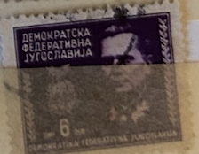
| SOURCE | TITLE| IMAGE MATCH | click to source page |
| www.ebay.com | YUGOSLAVIA-MNH STAMPS-COLOR ERROR- VIEW THE SIZE OF THE ... | 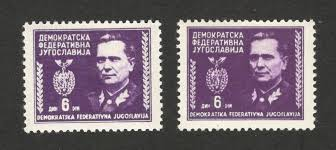 |
| www.alamy.com | Josip broz tito 1892 1980 hi-res stock photography and ... | 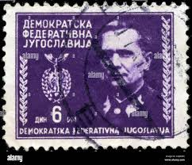 |
| www.istockphoto.com | Yugoslavian Stamp With Portret Of Josip Broz Tito Stock ... | 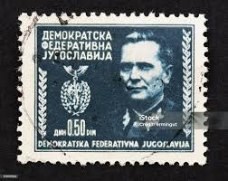 |
| www.ebay.com | 658 - Yugoslavia 1951 - Serbia Insurrection - Partisans ... | 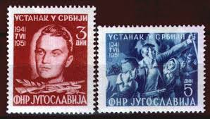 |
| www.alamy.com | Tito josip broz hi-res stock photography and images - Page ... | 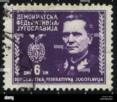 |
| stock.adobe.com | Revolutioner Images – Browse 34 Stock Photos, Vectors, and ... | 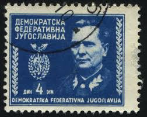 |
| www.dreamstime.com | Portrait of a Marshal Josip Broz Tito Editorial Stock Image ... | 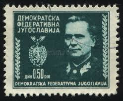 |
| www.shutterstock.com | 4+ Hundred Marshal Of Yugoslavia Royalty-Free Images, Stock ... | 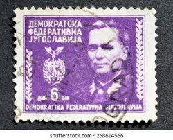 |
| www.buyhungarianstamps.com | 355-357 Yugoslavia - Marshal Tito, Set of 3 (MNH) – Eastern ... | 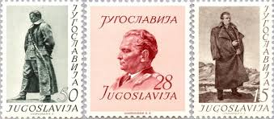 |
| www.ebay.com | R7919 Yugoslavia 1952 Tito's birthday 3v. MNH | eBay | 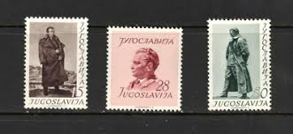 |
| colnect.com | Stamp: Constitution of the Democratic Republic of Yugoslavia ... | 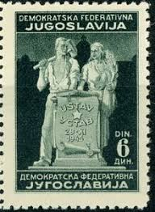 |
| www.alamy.com | Josip broz tito yugoslav president hi-res stock photography ... | 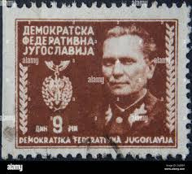 |
| stampden.com | Browse Listings in Europe > Yugoslavia - Page 2 of 25 - 10 ... | 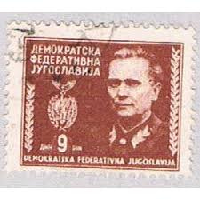 |
| www.dreamstime.com | YUGOSLAVIA - CIRCA 1945: a Stamp Printed in Yugoslavia ... | 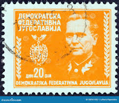 |
| www.stamps-plus.com | Stamps Plus | Yugoslavia | 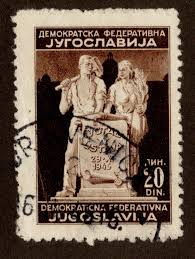 |
| www.osta.ee | Jugoslaavia " TITO " 1945 (247181296) - Osta.ee | 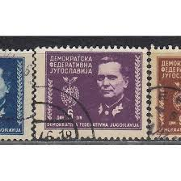 |
| www.ebay.com | Yugoslavia 1540,MNH.Michel 1895 Bl.19. National Insurrection ... | 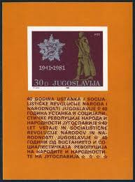 |
| www.worldatlas.com | Josip Broz Tito of Yugoslavia: Famous Heads of State | 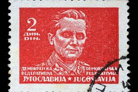 |
| www.istockphoto.com | 20+ Marshal Josip Broz Tito Stamp Stock Photos, Pictures ... | 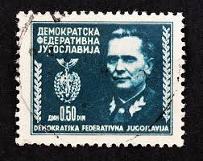 |
| worldstampsproject.org | Democratic Federal Yugoslavia – Varieties of Postage Stamps ... | 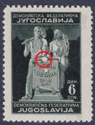 |
| deqistamps.com | YUGOSLAVIA 1918–1991 Specialized Catalog of Postage Stamps 2024 | 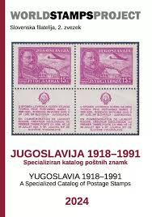 |
| fr.shopping.rakuten.com | timbre oblitéré : yougoslavie (tito) - Philatélie | Rakuten | 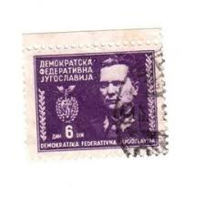 |
| www.etsy.com | Yugoslavia Stamp Set Postage Due Workers Medieval Coins ... | 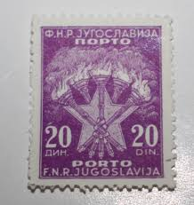 |
| commons.wikimedia.org | File:Yugoslavia-stamp-1945-partisan-girl-6-dinar.jpg ... | 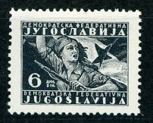 |
| www.shutterstock.com | 1+ Hundred General Tito Royalty-Free Images, Stock Photos ... | 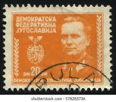 |
| www.amazon.nl | Yugoslavia 489II B,491II B (complete.Issue.) Block ... | 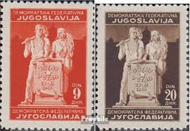 |
| www.buyhungarianstamps.com | 2004-2019 Yugoslavia - Postal Service Types of 1986-88 (MNH ... | 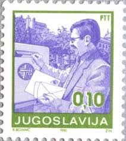 |
| postalmuseum.si.edu | Yugoslavia: A Philatelic Study | National Postal Museum | 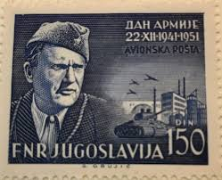 |
| www.youtube.com | Dead Country, Living Stamps - Yugoslavian Stamps - YouTube | 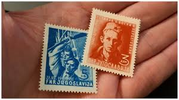 |
| oldthing.de | Der Artikel mit der oldhting.de-id 51798897 ist aktuell ... | 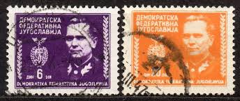 |
| www.dreamstime.com | Stamp Printed in Federal Democratic Republic of Yugoslavia ... | 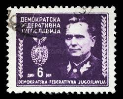 |
| www.ebay.com | D417988 Yugoslavia S/S MNH 1981 Famous People Statue Tito | eBay | 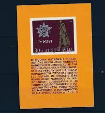 |
| www.alamy.com | YUGOSLAVIA - CIRCA 1945: A stamp printed in Democratic ... | 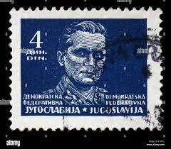 |
| en.wikipedia.org | Postage stamps and postal history of Yugoslavia - Wikipedia | 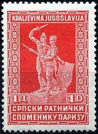 |
| deqistamps.com | Yugoslavia postage stamps year 1985 Josip Broz Tito | 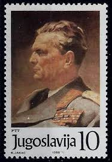 |
| www.postbeeld.com | Stamps from Croatia - PostBeeld - Online Stamp Shop - Collecting | 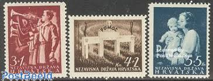 |
| worldstampsproject.org | Yugoslavia-1945-partisan-flag-postage-stamp-plate-flaw ... | 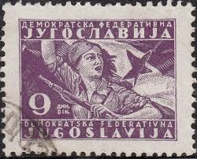 |
| www.shutterstock.com | Yugoslavia Circa 1967 Stamp Printed By Stock Photo 107418401 ... | 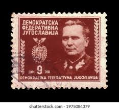 |
| www.buyhungarianstamps.com | 860-869 Yugoslavia - Marshal Tito (MNH) – Eastern Europe ... | 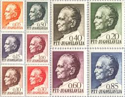 |
| www.dreamstime.com | 332 Yugoslavia Soldier Stock Photos - Free & Royalty-Free ... | 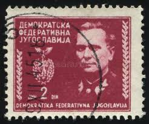 |
| en.wikipedia.org | 1978 ICF Canoe Sprint World Championships - Wikipedia | 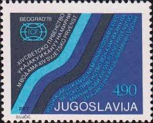 |
| www.freestampcatalogue.com | Stamps from Trieste B-Zone - Freestampcatalogue.com - The ... | 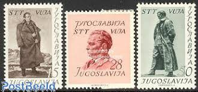 |
| commons.wikimedia.org | File:Marshal-Josip-Broz-Tito-1892-1980.jpg - Wikimedia Commons | 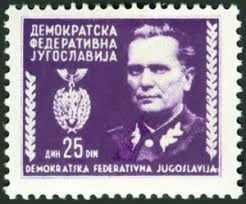 |
| en.numista.com | 5 Para (Emergency Postage Stamp Currency) - Serbia – Numista | 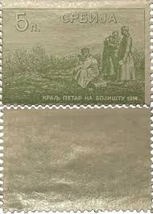 |
| www.bl.uk | Yugoslav socialism, the Non-Aligned Movement and the Global ... | 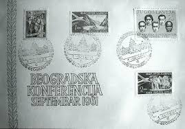 |
| www.firstissues.org | Bosnia & Herzegovina First Issues | 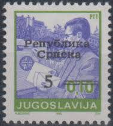 |
| www.facebook.com | After Bulgarian & Italian retreat from the World War II, by ... | 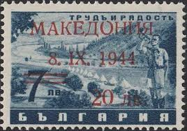 |
| stevelevinestamps-plus.com | YUGOSLAVIA STAMPS | 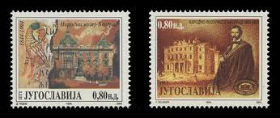 |
| sensia-solutions.com | The story behind the name of our cameras: MILEVA | 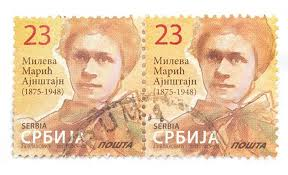 |
| deqistamps.com | Yugoslavia year 1950 May Day Marshal Tito set | |
| spcstamps.com | 1952 - Compleanno di Tito, tre valori nuovi integri (52/54 ... | |
| www.mesastamps.com | Collectible Yugoslavia Stamps | |
| www.allstamp.net | Serbia Stamps - Allstamp.net | |
| www.youtube.com | Sorting Yugoslavia Stamps from Hoarding Chaos - YouTube | |
| foreignvolunteerlegion.com | AXIS & LEGION MILITARIA" - Axis & Legion Militaria | |
| digital.kenyon.edu | Philatelic and Numismatic Forms of Commemoration | Kenyon ... | |
| stampforgeries.com | Stamp forgeries of Croatia | Stampforgeries of the World | |
| dudewheresmygomar.wordpress.com | Stamps from the People's Socialist Republic of Albania ... | |
| worldstampsproject.org | Yugoslavia-1945-Split-provisional-postage-stamp-issue ... | |
| spiral.lynn.edu | Holocaust and Genocide-Related Special Collections ... |
{kind=link}
{kind=link}